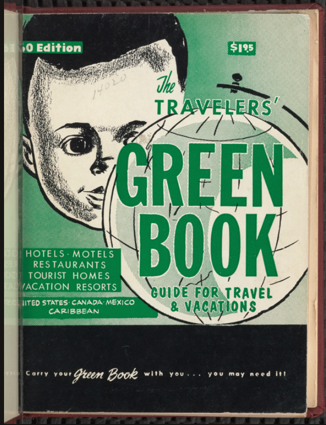

African Americans fight for accomodation in public space did not start during the sit-in of the Civil Rights era. Rather, some of the first contested spaces were in the Great Outdoors. Public pools, lakes, beaches, and parks are just a few of the spaces African Americans demanded access to. African Americans' entrance in the public outdoor spaces was often met with great hostility from white Americans. African Americans were often attacked. The violence revolving around these public spaces often led to rioting and even deaths.
African Americans fought for equality included a fight to travel and vacation wherever they wanted to. They combated segregation and disinfranchisement in various ways. Many African Americans created their own vacation spots. They created leisure spaces where they could enjoy themselves without ridicule. They had fun and celebrated their communities while they continued to fight for equal access to all recreational opportunities.
The Green Books and the Impact of Travel Guides

In 1936, Victor H. Green published the first issue of The Negro Motorist Green Book. What began as a travel guide for Metropolitan New York, The Green Book became a national African American travel guide just a year after its first publication. This annual publication consisted of businesses across the country that welcomed African American customers. This was not the only travel guide, but one of the most popular. It consisted of articles about the state of travel in the United States and other issues plaguing the country. Travel guides made traveling across the country easier for African Americans during segregation. They could plan ahead to ensure a stress free trip.
These travel guides laid out African American supported businesses state-by-state. These included resorts, but also gas stations, supply stores, beauty and barber shops, and restaurants. These guides helped African American businesses flourish across the nation. Significantly, the created a Black network across the United States, connecting African American from all over the country together. The travel gurides even promoted internation travel destinations that were welcoming to African Americans. From 1936-1967, The Negro Motorist Green Books highlighted the positive recreational experiences of African American and their right to outdoor amusement. Eventually, these travel guides came to an end. The passing of the 1964 Civil Rights Act influenced this decline. This was a step in the right direction, but was not a cure-all solution to discrimination against African Americans.
African Americans and National Park Service
insert info here
African Americans and State Parks
insert info here
Racism and the Perception of African American Leisure
insert info here